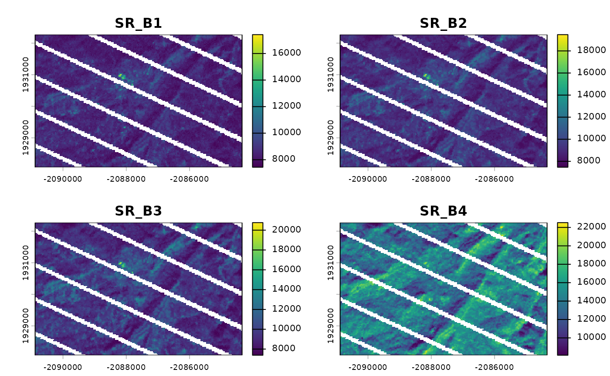
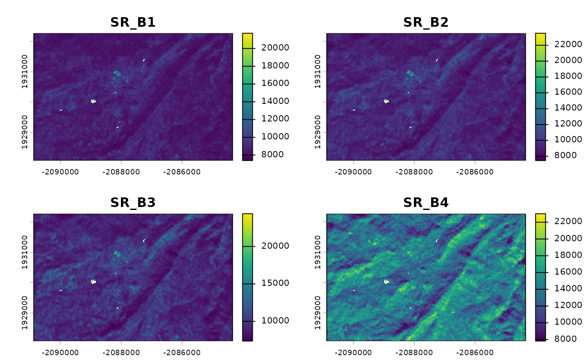

## rgeedim v0.4.0 -- using geedim 2.0.0 w/ earthengine-api 1.7.10## terra 1.8.97
project_id <- Sys.getenv("GOOGLE_CLOUD_QUOTA_PROJECT", "rgeedim-demo")
gd_initialize(project = project_id)## Using Application Default Credentials (ADC)
b <- gd_bbox(
xmin = -120.296,
xmax = -120.227,
ymin = 37.9824,
ymax = 38.0071
)
## landsat example
# search collection for date range and minimum data fill (85%)
x <- 'LANDSAT/LE07/C02/T1_L2' |>
gd_collection_from_name() |>
gd_search(
start_date = '2020-11-01',
end_date = '2021-02-28',
region = b,
cloudless_portion = 85
)
# inspect individual image metadata in the collection
gd_properties(x)## id date fill cloudless grmse
## 1 LANDSAT/LE07/C02/T1_L2/LE07_043034_20201130 2020-11-30 86.41 99.96 4.92
## 2 LANDSAT/LE07/C02/T1_L2/LE07_043034_20210101 2021-01-01 86.85 97.91 4.79
## 3 LANDSAT/LE07/C02/T1_L2/LE07_043034_20210117 2021-01-17 86.05 99.70 5.44
## 4 LANDSAT/LE07/C02/T1_L2/LE07_043034_20210218 2021-02-18 85.66 99.60 5.73
## saa sea
## 1 151.45 25.21
## 2 148.07 22.47
## 3 145.16 23.71
## 4 138.46 30.91
# download a single image, with "clouds" masked
y <- gd_properties(x)$id[1] |>
gd_image_from_id() |>
gd_download(
filename = "image.tif",
region = b,
scale = 30,
crs = 'EPSG:5070',
dtype = 'uint16',
overwrite = TRUE,
silent = FALSE
)
plot(rast(y)[[1:4]])
# create composite landsat image near December 1st, 2020 and download
# using q-mosaic method.
z <- x |>
gd_composite(
method = "q-mosaic",
date = '2020-12-01'
) |>
gd_download(
filename = "image.tif",
region = b,
scale = 30,
crs = 'EPSG:5070',
dtype = 'uint16',
overwrite = TRUE,
silent = FALSE
)
plot(rast(z)[[1:4]])